Capitulo 2
-Representando figuras espaciais
186
Vistas ortogonais
As áreas da construção e da metalúrgica utilizam um recurso para representar as construções ou as peças que serão feitas. Normalmente, os desenhos apresentam três vistas de um objeto e esse recurso é chamado de vista ortogonal. Cada vista é uma projeção ortogonal de um objeto tridimensional em três planos perpendiculares.
Veja um exemplo:
- Troque ideias com um colega e representem o sólido geométrico que está representado nas vistas acima.
Um objeto representado em perspectiva pode esconder alguns detalhes importantes da peça. Observe o exemplo:
187
Na forma que está representado não podemos saber o que há no meio da peça. Assim, precisamos de mais uma vista:
A projeção ortográfica é uma forma de representar graficamente objetos tridimensionais em superfícies planas, como um quadro ou uma folha de papel.
Observe agora como são as projeções ortogonais em 3 planos perpendiculares do objeto proposto no início do capítulo:
- Desenhe, no caderno, as projeções ortogonais do sólido geométrico a seguir.
- Qual das figuras geométricas espaciais a seguir tem a mesma representação,
qualquer que
seja a vista?
- 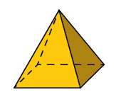
- 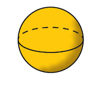
- 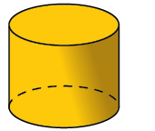
- 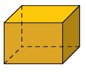
- Qual figura podemos obter na projeção ortogonal de um segmento de reta perpendicular a uma reta contida em um plano?
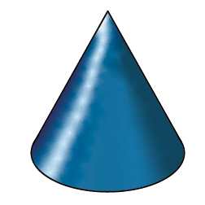
188
Desenhos em perspectiva
Durante a história da humanidade tentamos representar os objetos e as situações que vivenciamos através de desenhos. Um exemplo é a arte rupestre, na qual as criações artísticas eram feitas em rochas durante a Pré-História.
Já no Antigo Egito, os egípcios utilizavam uma técnica de desenho geometrizado e bidimensional, geralmente suas pinturas eram acompanhadas de hieróglifos.
Logo, muitas outras técnicas foram criadas e com isso foi desenvolvido o estudo da perspectiva, o que possibilitou a muitos artistas representar paisagens com ideia de profundidade.
189
Um dos primeiros pintores a desenvolver a técnica da perspectiva foi o italiano Giotto di Bondone (1276-1337), Giotto é considerado o precursor da pintura renascentista. Mais recente, Maurits Cornelis Escher (1898-1972) gostava de representar o que é tridimensional, em um plano bidimensional, como a folha de papel.
- Troque ideias com um colega e descrevam, com suas palavras, o que seria uma pintura com perspectiva.
Essa técnica também é usada frequentemente em projetos arquitetônicos. Observe:
190
Existem diferentes técnicas de desenho em perspectiva, dentre as principais: isométrica, cavaleira e cônica.
Agora, observe a fotografia a seguir.
Nela podemos ter uma ideia de como é a representação de um efeito da perspectiva cônica. Nessa técnica podemos notar um ponto de fuga sobre uma linha, chamada de linha do horizonte.
Um desenho pode ter um ou mais pontos de fuga e, geralmente, é utilizado quando uma parte lateral do objeto a ser desenhado encontra-se diretamente em frente ao observador.
Vamos representar um cubo em perspectiva:
- Inicialmente, traçamos a linha do horizonte e marcamos nela um ponto de fuga.
- Faça um quadrado na folha, por exemplo na parte inferior da linha do horizonte.
191
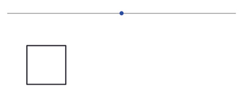
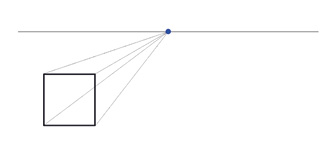
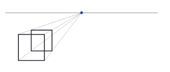
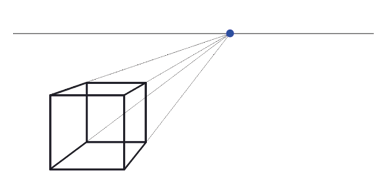
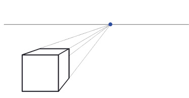
- Em seu caderno, crie um segundo cubo na mesma representação feita anteriormente.
- (ENEM) Representar objetos tridimensionais em uma folha de papel nem sempre é tarefa fácil. O artista holandês, Escher (1898-1972), explorou essa dificuldade criando várias figuras planas impossíveis de serem construídas como objetos tridimensionais, a exemplo da litografia Belvedere, reproduzida a seguir.
- 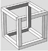
- 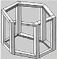
- 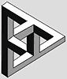
- 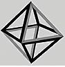
Considere que um marceneiro tenha encontrado algumas figuras supostamente desenhadas por Escher e deseje construir uma delas com ripas rígidas de madeira que tenham o mesmo tamanho. Qual dos desenhos a seguir ele poderia reproduzir em um modelo tridimensional real?